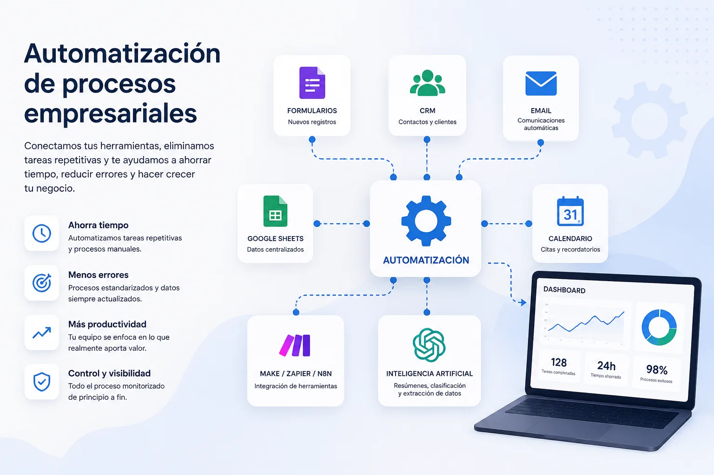

Demasiado trabajo manual
Formularios que se revisan a mano, datos que se copian entre herramientas, correos repetitivos, informes manuales y seguimientos que dependen de la memoria del equipo.
Servicio de automatización empresarial
Automatizamos tareas repetitivas, conectamos herramientas digitales e integramos inteligencia artificial en procesos reales para que tu empresa ahorre tiempo, reduzca errores y trabaje con más control.

Formularios que se revisan a mano, datos que se copian entre herramientas, correos repetitivos, informes manuales y seguimientos que dependen de la memoria del equipo.
Muchas empresas usan CRM, correo, hojas de cálculo, formularios, calendarios o plataformas de facturación, pero cada sistema funciona por separado.
La inteligencia artificial puede aportar mucho valor, pero solo cuando se integra dentro de procesos concretos y útiles para el negocio.
Automatización de formularios, avisos internos, registro de contactos, respuestas automáticas y seguimiento inicial de oportunidades comerciales.
Ideal para no perder clientes potencialesCreación de reportes automáticos con datos de distintas fuentes para evitar copiar y pegar información cada semana o cada mes.
Más control y menos trabajo manualSecuencias de correo, confirmaciones, recordatorios, avisos internos y comunicaciones personalizadas según el estado de cada proceso.
Respuesta más rápida y profesionalAutomatización de registros, clasificación de solicitudes, actualización de documentos, organización de datos y notificaciones internas.
Menos errores repetitivosConexión entre formularios, correo, hojas de cálculo o bases de datos para actualizar estados, crear tareas y hacer seguimiento comercial.
Mejor seguimiento de oportunidadesIntegración de IA para resumir textos, clasificar mensajes, redactar borradores, extraer información o generar informes iniciales.
IA aplicada a tareas concretasSiempre que sea posible, trabajamos con las herramientas que ya utiliza tu empresa: correo, formularios, CRM, Google Sheets, Airtable, calendarios, Make, Zapier, n8n u otras plataformas.
Empezamos por procesos concretos y dejamos una base preparada para crecer con nuevas automatizaciones cuando tu empresa lo necesite.
Priorizamos automatizaciones que tengan impacto directo en ahorro de tiempo, reducción de errores, seguimiento comercial o mejora del servicio.
Revisamos qué tareas se repiten, qué herramientas utilizas y dónde se pierde más tiempo.
Detectamos qué automatizaciones pueden aportar más valor desde el principio.
Definimos qué activa la automatización, qué condiciones debe cumplir y qué resultado debe generar.
Construimos la automatización, la probamos con casos reales y ajustamos el funcionamiento.
La IA puede ayudar a resumir solicitudes, clasificar mensajes, detectar prioridades y preparar información para revisión humana.
Puedes generar respuestas iniciales, textos comerciales, emails de seguimiento o mensajes internos que luego tu equipo revisa.
La IA puede ayudar a localizar información relevante dentro de formularios, documentos, emails o solicitudes de clientes.
Es la creación de sistemas que ejecutan tareas repetitivas de forma automática conectando herramientas, datos y reglas de negocio.
Sí. Muchas pymes pueden beneficiarse especialmente porque tienen equipos reducidos y demasiadas tareas manuales acumuladas.
No siempre. En muchos casos se pueden conectar las herramientas que ya utilizas y automatizar procesos sin rehacer toda la empresa.
Sí. La IA puede ayudar a resumir, clasificar, redactar, extraer información y apoyar procesos internos o comerciales.
Lo ideal es empezar por una tarea repetitiva, frecuente y fácil de medir: leads, informes, emails, avisos internos o actualización de datos.
No. Una buena automatización debe aumentar el control, porque permite definir reglas, avisos, registros y puntos de supervisión.
Podemos revisar tu situación actual y proponerte una primera automatización realista para empezar a ahorrar tiempo sin complicar tu negocio.